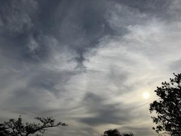
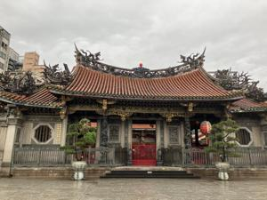
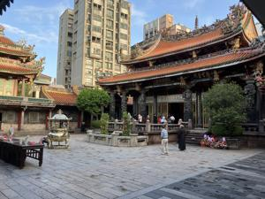
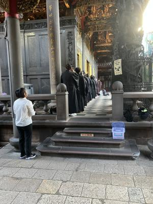
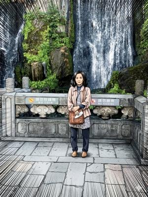

うるがいの話 ある日
最新: 龍山寺【うるがいの話 ある日】とは 一日だけのプログです
『うるがいの話』の最新一日だけのプログで、通信料が少なく経済的だ。カニの画像をクリックすると全ての日付が載る『うるがいの話』サイトを表示します
|
|
【うるがいの話】 うるがい(ｳﾙｶﾞｲ urugai)とは、『もずくがに』の名前でとても大きくなります。 |
|---|---|
|
|
【カミマヤーの話】 猫のことを方言でマヤーといいます。カミマヤー（kamimayaa）とは、神の猫のことです。 |
|
【たながぁの音楽】 たながぁ（ﾀﾅｶﾞｰ tanagaa）とは手長えびのことで、何種類かあり大きいのは車 エビぐらいになります。 |

|
【ぶながぁの話】 ぶながぁ(ﾌﾞﾅｶﾞｰ bunagaa)とは、赤い髪の毛、赤い身体、そして身長は１ｍ２０ｃｍ ぐらい、川の蟹を食べているの目撃された。場所は沖縄県国頭郡大宜味村のと ある村僕の隣近所に住んでいる爺さんから、聞いた話です。 |
|
|
【ギーマの話】 ギーマ(giima)とは、山原の里山に咲くスズランに似た、 花を付けます。実は食べられます、 気が付くと口の周りが紫になっています。 |
2026年04月29日 (水）龍山寺
15:38

台湾２日目の朝、６時２５分。龍山寺を撮る。お経が聞こえた。

台湾３日目の朝、６時２８分。龍山寺の中庭を撮る。人だかり。

台湾の龍山寺へ、朝6時過ぎに行きました。
皆でお経を唱えていました。
お経の名前は
教えてください
頭が金剛というお経の本が、ありました。

金剛般若波羅蜜經
ちなみに「金剛」は、ここでは金属のことではなく
ダイヤモンドのように、あらゆる迷いを断ち切る智慧
という意味。
朝６時のＬｕｎｇｓｈａｎ Ｔｅｍｐｌｅでそれに出会うとは、
なかなか渋い体験です。観光で行っても、その時間帯はかなり“
本物の地元の信仰空間”なんですよね。
お経は長く、お寺の正面には、お坊さんがずらりと並び、信心深
い人は、ひざまずいて祈っていた。女性のお坊さん（丸坊主でな
かった）は、白い運動シューズを履き、軽く足踏みをしてお経を
していたのが、印象深かった。

台湾３日目の朝、７時２９分。龍山寺の滝で、記念撮影。龍山寺
は宿泊ホテルから、５分の距離にあったの毎朝、ウォーキングし
ていた。